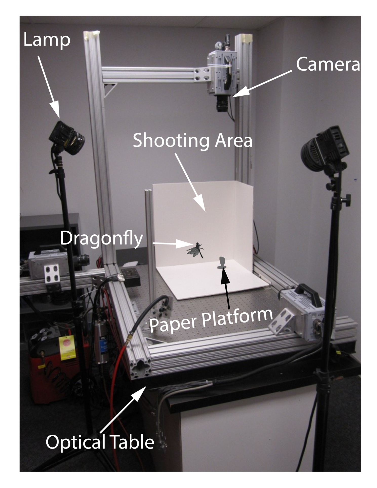

1

Flow Simulation of a dragonfly in flight
2

Experimental Setup
2

Dragonfly in reverse flight
3
Caption Two
UNDER CONSTRUCTION
An integrated experimental and computational approach is to study the biomechanics, aerodynamics and flow physics underlying complex biological locomotion. Primary focus is on flapping flight. Secondary Focus is on swimming. Tertiary focus is on Gliding flight (Flying Snake).
Enjoy the slide show:
Ayodeji T. Bode-Oke, Samane Zeyghami, Haibo Dong Flying in reverse: kinematics and aerodynamics of a dragonfly in backward free flight J. R. Soc. Interface 2018 15 20180102; DOI: 10.1098/rsif.2018.0102. Published 27 June 2018
Haibo Dong,Ayodeji T. Bode-Oke, Chengyu Li Learning from Nature: Unsteady Flow Physics in Bioinspired Flapping Flight. Flight Physics-Models, Techniques and Technologies. InTech, 2018. Published 14 February 2018
Ayodeji T. Bode-Oke, Samane Zeyghami, Haibo Dong Aerodynamic Force and Flow Features of a Damselfly in Takeoff Flight Bioinspiration & biomimetics 12.5 (2017): 056006; DOI: https://doi.org/10.1088/1748-3190/aa7f52. Published 25 September 2017
Samane Zeyghami, Ayodeji T. Bode-Oke, Haibo Dong Quantification of wing and body kinematics in connection to torque generation during damselfly yaw turn Science China Physics, Mechanics & Astronomy, 60(1), p.014711.DOI: https://link.springer.com/article/10.1007/s11433-016-0302-5. Published 10 November 2016